# instala los paquetes
install.packages('sf')
# carga los paqutes en el entorno de R y permite utilizar
# las funciones adicionales que contienen
library(sf)Taller 6 (IMSE1017)
Operaciones geométricas en datos vectoriales con {sf}
Descripción
En las primeras clases de la asignatura se ha empezado a trabajar con el software R, partiendo por conocer la sintaxis, la IDE RStudio, las estructuras y tipos de datos. En el primer taller trabajó con datos que vienen incluidos en los paquetes base de R como mtcars, aplicando funciones que permitan identificar los tipos de objetos y su estructura, además de realizar proceso de indexación para diferentes tipos de objetos (ej, data.frame, matrix, listas). En el segundo taller, trabajó con datos climáticos en donde tuvo que importar los datos, realizar diferentes tipos de indexaciones, algunas operaciones matemáticas, y exportar los datos a un archivo. En el tercer taller se trabajo con datos vectoriales utilizando {sf}.
Objetivo del taller
Trabajar con operaciones geométricas con datos vectoriales en R con el paquete {sf}
Paquetes R
Hasta el momento hemos trabajado con los paquetes que vienen inculidos en R base. Ahora empezaremos a trabajar con paquetes adicionales que no vienen instalados por defecto en R, por lo que deberá instalarlos. El paquete con el que trabajaremos este taller es {sf}, el cual nos permite trabajar con datos de tipo vectoriales.
Para instalar los paquetes debe realizar lo siguiente:
Data
Los datos con los que debe trabajar son:
1.- Canales nacionales: capas de los canales de riego
2.- Division comunal: capa con los límites comunales de Chile
3.- Estaciones Chile: capa con la ubicación de las estaciones climáticas en Chile.
Los puede descargar desde acá
¿Qué debe entregar?
Debeŕa utilizar RStudio para crear un script, en donde resolverá cada uno de los ejercicios. Debe utilizar los comentarios (#) para hacer una descripción del ejercicio e incorporar cualquier información que ayude a entender lo realizado. A modo de ejemplo:
# Ejercicio 1:
# comentario explicando lo que se hace
{
Aca va el script que resuelve el ejericio 1
}Debe guardar el script con el nombre taller6.R. Los archivos los debe subir en el campus virtual en la sección Actividades -> Evaluaciones -> Taller 6
Fecha de entrega
Viernes 17 de noviembre hasta las 10:00am
Ejercicios
1.- Ejercicio 1 (40pts)
- Cargue el archivo vectorial de división comunal de Chile.
- Seleccione las comunas de “La Florida”, “Queilén” y “Molina”
- Realice una simplificación de la geometria con una tolerancia de 200, 500 y 1000 metros y asigne los resultados a nuevos objetos de R.
- Cree un mapa con los resultados.
library(sf)Linking to GEOS 3.11.1, GDAL 3.6.2, PROJ 9.1.1; sf_use_s2() is TRUEcomunas <- read_sf('../../data/division_comunal/division_comunal.shp')
comunas_sel <- comunas[comunas$NOM_COM %in% c("La Florida", "Queilén", "Molina"),]
comunas_sel_sim200 <- st_simplify(comunas_sel,dTolerance = 200)
comunas_sel_sim500 <- st_simplify(comunas_sel,dTolerance = 500)
comunas_sel_sim1000 <- st_simplify(comunas_sel,dTolerance = 1000)
par(mfrow = c(1,3))
plot(comunas_sel_sim200$geometry)
plot(comunas_sel_sim500$geometry)
plot(comunas_sel_sim1000$geometry)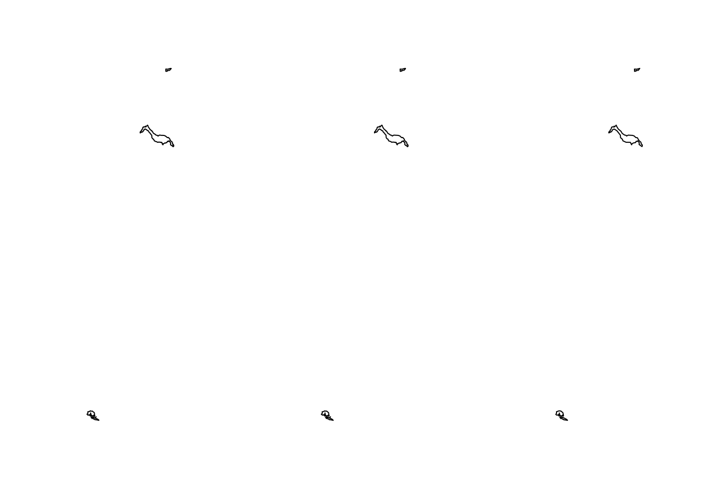
2.- Ejercicio 2 (50pts)
- Seleccione la región Metropolitana del archivo vectorial de la división comunal de Chile y asigneselo al objeto
rm. - Calcule los centroides de cada una de las comunas y guardelo en un objeto llamado
centro_rm - Cree un mapa en donde se pueda ver los límites de las comunas de la región Metropolitana y los centroides de cada una.
# selección región Metropolitana
comunas_RM <- comunas[comunas$NOM_REG == "Región Metropolitana de Santiago", ]
#calculo de centroides
centro_rm <- st_centroid(comunas_RM)Warning: st_centroid assumes attributes are constant over geometries#mapa limites comunas y centroides
plot(comunas_RM$geometry)
plot(centro_rm$geometry,col ='red', add = TRUE)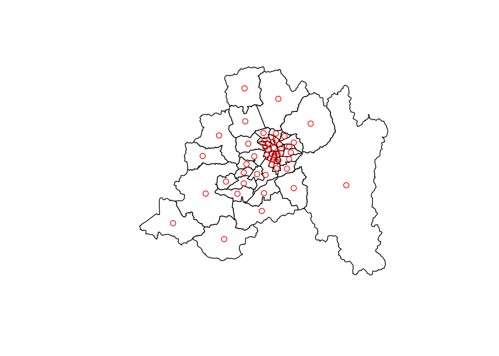
3.- Ejercicio 3 (50pts)
Haga lo mismo que en el ejercicio 2 pero para la región de Los Ríos.
# selección región de Los Ríos
comunas_LR <- comunas[comunas$NOM_REG == "Región de Los Ríos", ]
#calculo de centroides
centro_lr <- st_centroid(comunas_LR)Warning: st_centroid assumes attributes are constant over geometries#mapa limites comunas y centroides
plot(comunas_LR$geometry)
plot(centro_lr$geometry,col ='red', add = TRUE)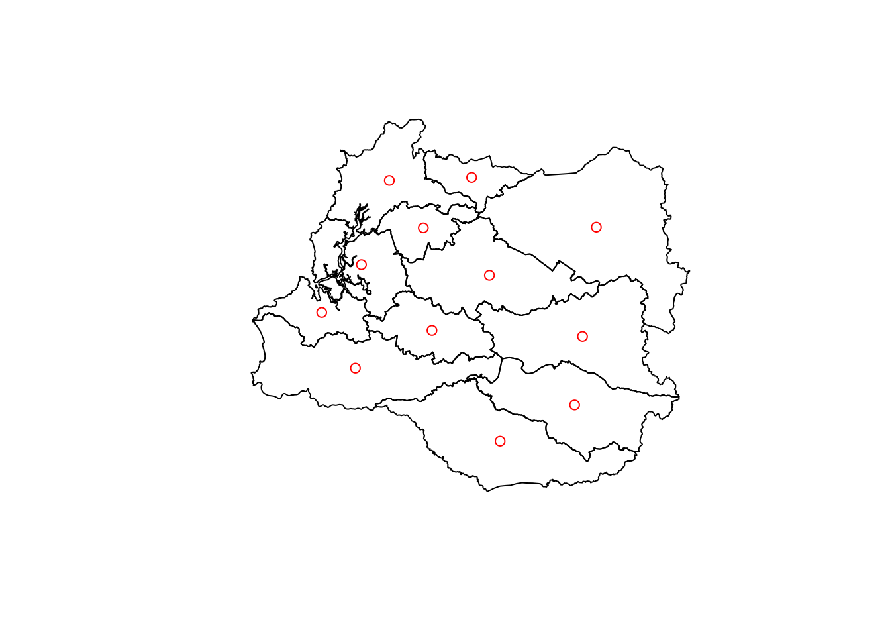
4.- Ejercicio 4 (80pts)
- Cargue la capa vectorial de canales nacionales
- Utilicé las operaciones de corte para encontrar los canales que corresponden a la provincia de Santiago y guardelo en un objeto
canal_prov_rm. - Cree un
bufferde 150 metros para los canales de la provincia de Santiago - Cree mapas en los que se puedan ver los canales sin buffer y otro con los canales con el buffer.
canales <- read_sf('../../data/canales_nacional_final/canales_nacional_final.shp')
#selccionar comunas que corresponden a la provincia de Santiago
provincia_stgo <- comunas[comunas$NOM_PROV == 'Santiago',]
# utilizar operaciones geometricas para intersectar todos los canales de Chile con la provincia de Santiago
canales_stgo <- st_intersection(canales,provincia_stgo)Warning: attribute variables are assumed to be spatially constant throughout
all geometriescan_stgo_buff <- st_buffer(canales_stgo,150)
par(mfrow = c(1,2))
plot(canales_stgo$geometry)
plot(can_stgo_buff$geometry)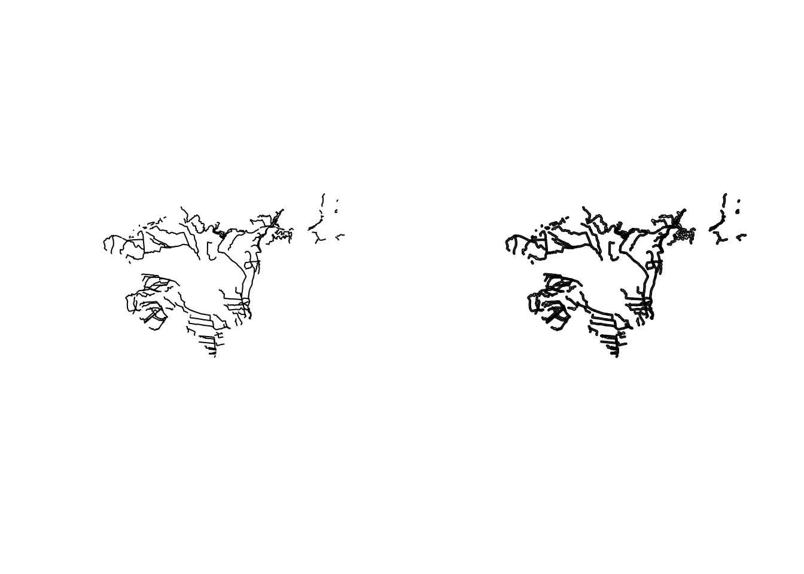
5.- Ejercicio 5 (60pts)
- Cargue el archivo vectorial de estaciones de Chile.
- Seleccione las estaciones que se encuentran en la región de O’Higgins.
- Cree un buffer de 500m alrededor de cada estación.
estaciones <- read_sf('../../data/estaciones_chile/estaciones_chile.shp')
reg_ohi <- comunas[comunas$NOM_REG == "Región del Libertador Bernardo O'Higgins", ]
estaciones <- st_transform(estaciones,st_crs(reg_ohi))
estaciones_ohi <- st_intersection(estaciones,reg_ohi)Warning: attribute variables are assumed to be spatially constant throughout
all geometriesestaciones_ohi_buff <- st_buffer(estaciones_ohi,500)
plot(estaciones_ohi_buff$geometry)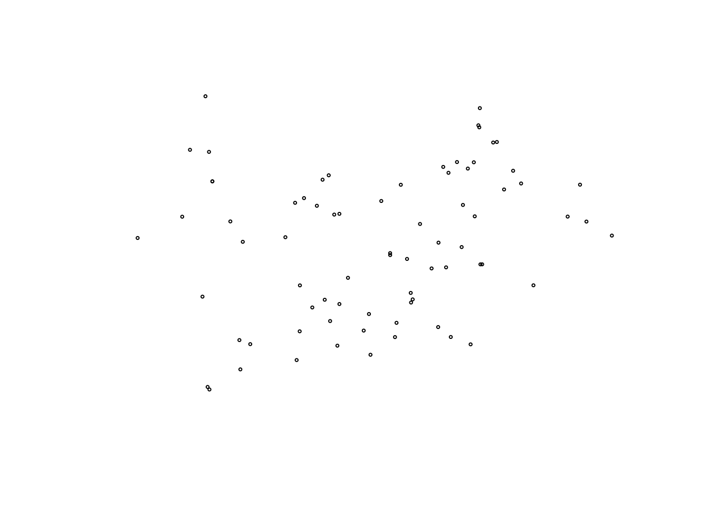
6.- Ejercicio 6 (80pts)
- Disuelva las comunas de la provincia de Ñuble y guardela en un objeto nuevo.
- Exporte el objeto nuevo como tipo de archivo shapefile (.shp)
- Exporte el objeto nuevo como tipo de archivo geopackage (.gpkg)
- Seleccione dos comunas de la provincia de Ñuble y unalas en un solo objeto
sfg, asigneselo a un objeto nuevo. - Exporte el objeto anterior a un archivo geopackage.
#seleccionar comunas de Ñuble
provi_nuble <- comunas[comunas$NOM_PROV == 'Ñuble',]
#disolver los poligonos internos para quedar con el borde de la provincia de ñuble
provi_nuble_u <- st_union(provi_nuble)
#guardar el archivo como shapefile
st_write(provi_nuble_u,'../../data/provi_nuble.shp',append = TRUE)Updating layer `provi_nuble' to data source `../../data/provi_nuble.shp' using driver `ESRI Shapefile'
Updating existing layer provi_nuble
Writing 1 features with 0 fields and geometry type Polygon.#guardar el archivo como geopackage
st_write(provi_nuble_u,'../../data/provi_nuble.gpkg',append = TRUE)Updating layer `provi_nuble' to data source `../../data/provi_nuble.gpkg' using driver `GPKG'
Updating existing layer provi_nuble
Writing 1 features with 0 fields and geometry type Polygon.dos_comunas <- st_union(provi_nuble[c(1,7),])
plot(dos_comunas)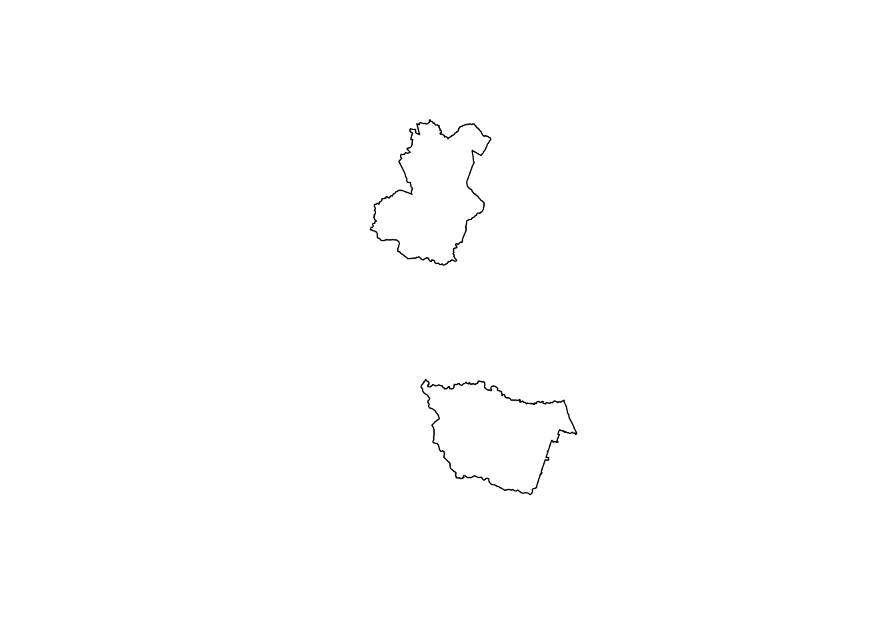
st_write(dos_comunas,'../../data/dos_comunas.gpkg',append = TRUE)Updating layer `dos_comunas' to data source `../../data/dos_comunas.gpkg' using driver `GPKG'
Updating existing layer dos_comunas
Writing 1 features with 0 fields and geometry type Multi Polygon.7.- Ejercicio 7 (30pts)
Pruebe las operaciones con los circulos x e y
- st_difference(x,y)
- st_difference(y,x)
- st_union(x,y)
- st_intersection(x,y)
- st_sym_difference(x,y)

b = st_sfc(st_point(c(0, 1)), st_point(c(1, 1))) # create 2 points
b = st_buffer(b, dist = 1)
x <- b[1]
y <- b[2]
plot(c(x,y))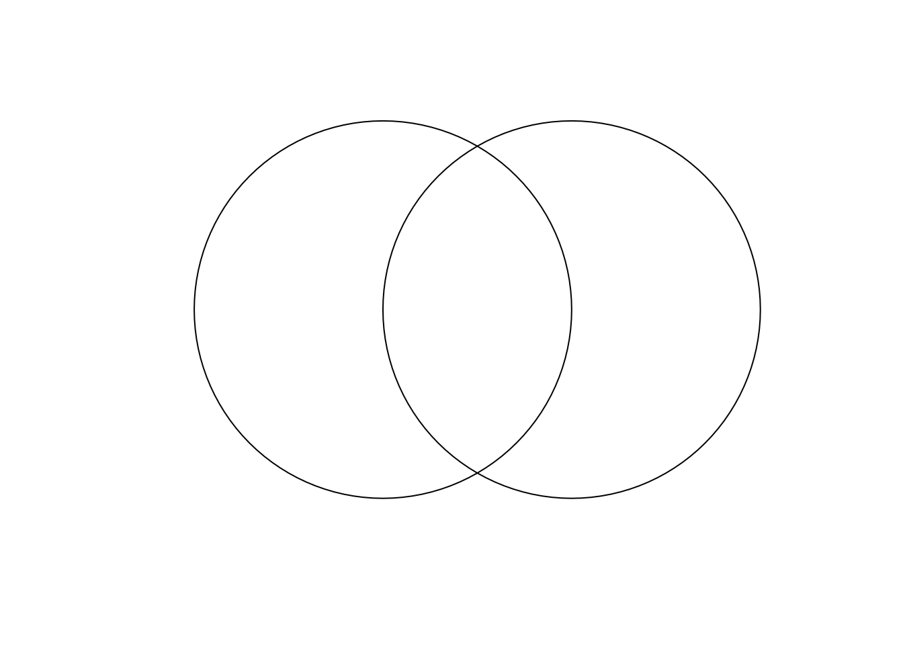
obj1 <- st_difference(x,y)
plot(obj1)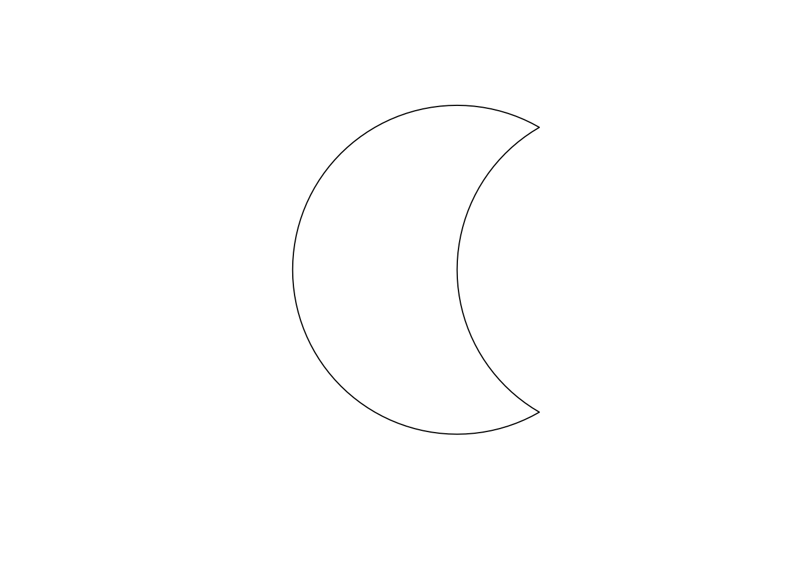
obj2 <- st_difference(y,x)
plot(obj2)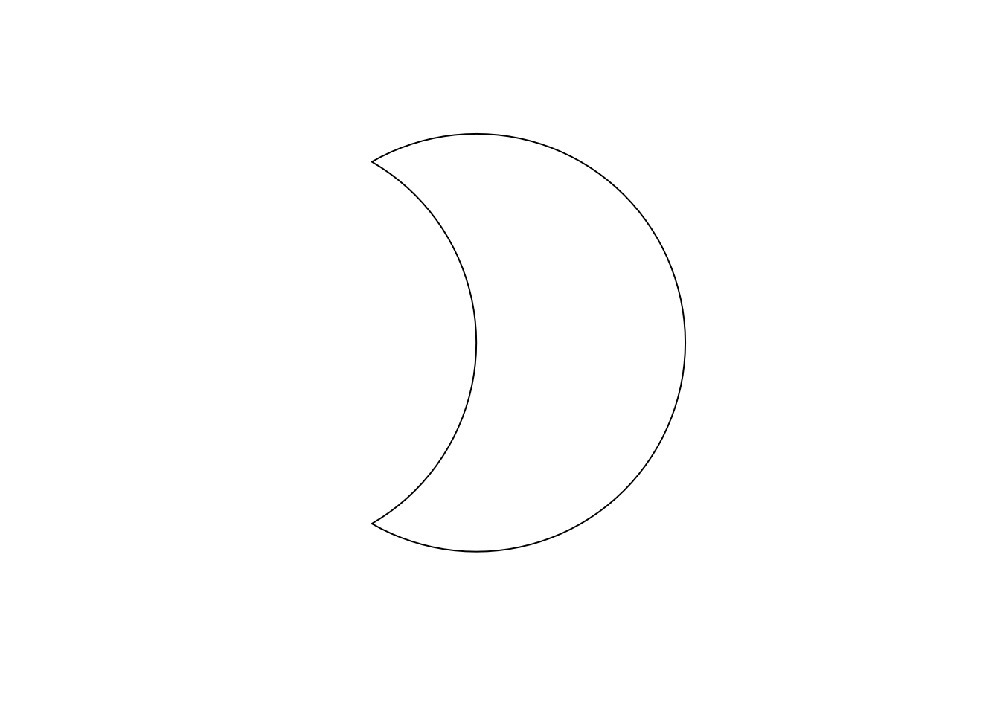
obj3 <- st_union(x,y)
plot(obj3)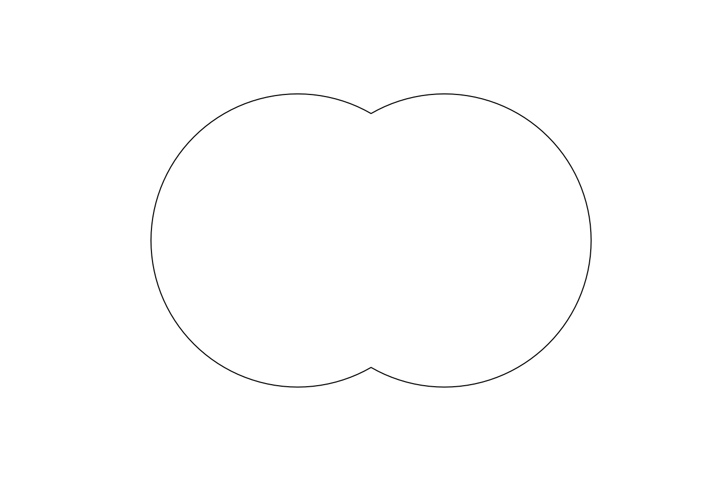
obj4 <- st_intersection(x,y)
plot(obj4)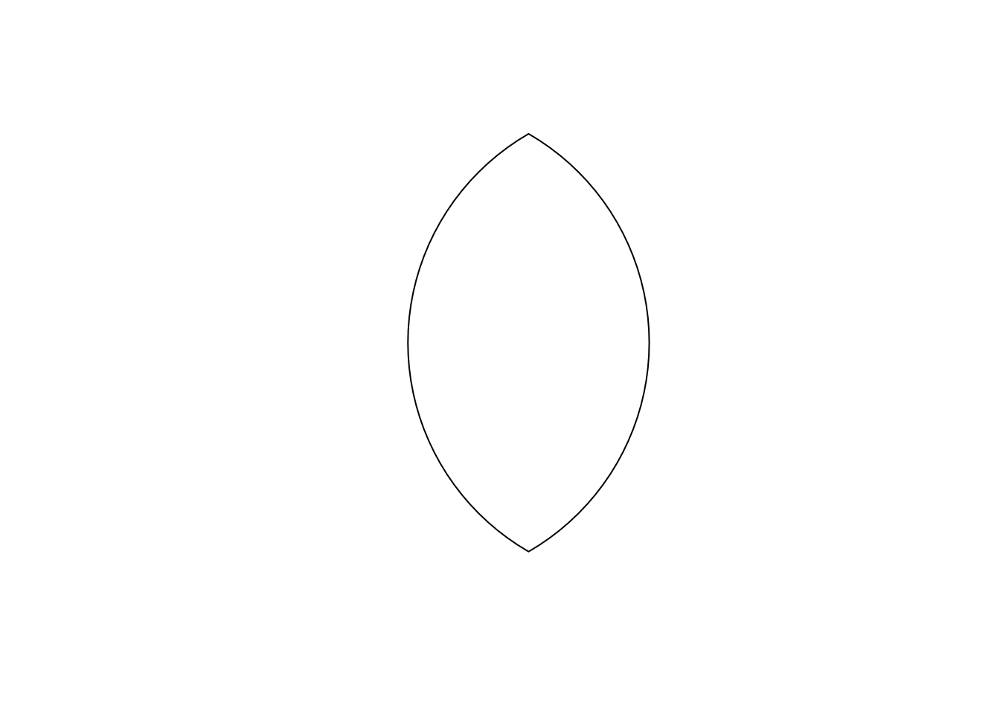
obj5 <- st_sym_difference(x,y)
plot(obj5)